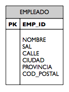

Mapeado entidad-relación: tablas
En este tema vamos a comenzar a tratar en profundidad el mapeado entidad-relación (ORM, Object-Relational Mapping en inglés), uno de los aspectos principales del API de persistencia. Veremos los aspectos referidos al mapeo de entidades en tablas: cómo acceder al estado de una entidad, como se mapea la entidad en una tabla, como se mapean los distintos tipos simples de Java en tipos de la base de datos, cómo se maneja el identificador de la identidad y se mapea en la clave primaria de la tabla. Terminaremos introduciendo un par de conceptos avanzados, los objetos embebidos y la herencia.
Como hemos comentado en temas anteriores, la especificación del ORM se realiza mediante metadatos especificados por el desarrollador. JPA soporta dos formas de especificar estos metadatos, mediante anotaciones y mediante ficheros XML. A lo largo de todo el tema (y del módulo) utilizaremos las anotaciones por ser mucho más legibles y estar integradas en el propio código de la aplicación.
Acceso al estado de la entidad
El proveedor de la base de datos debe poder acceder al estado mapeado en memoria en tiempo de ejecución, de forma que en el momento de escribir los datos, éstos puedan obtenerse de la instancia de la entidad. De la misma forma, cuando se carga el estado de la base de datos, el proveedor debe poder crear una nueva instancia e insertar en ella los datos obtenidos de la base de datos.
Existen dos formas diferentes con las que podemos especificar el estado persistente: podemos anotar los campos de la entidad o anotar sus propiedades (métodos JavaBean getters y setters). El mecanismo del proveedor para acceder al estado dependerá entonces del tipo de anotación utilizada. En el primer caso, el proveedor leerá y establecerá los campos de la entidad utilizando reflexión. Si las anotaciones se realizan en las propiedades, entonces el proveedor utilizará estos métodos para acceder al estado.
Acceso por campo
Si anotamos los campos de una entidad, el proveedor accederá a estos campos mediante reflexión (aunque estén declarados como privados). A esta forma de acceder a la entidad por parte del proveedor se denomina acceso por campo. Los métodos getters y setters serán ignorados por el proveedor. Todos los campos deben declararse como protected o private. Se desaconseja siempre el uso de campos públicos, porque podrían accederse directamente desde otras clases. Este acceso público podría incluso estropear el funcionamiento del proveedor.
El ejemplo siguiente muestra el uso de las anotaciones en los campos. La anotación @Id indica no sólo que el campo id es el identificador o clave primaria de la entidad, sino también que se va a utilizar un acceso por campo. Los campos nombre y sueldo son hechos persistentes en columnas con el mismo nombre.
@Entity
public class Empleado {
@Id private int id;
private String nombre;
private Long sueldo;
public Empleado() {}
public int getId() { return id; }
public void setId(int id) { this.id = id; }
public String getNombre() { return nombre; }
public void setNombre(String nombre) { this.nombre = nombre; }
public Long getSueldo() { return sueldo; }
public void setSueldo(Long sueldo) { this.sueldo = sueldo; }}
Acceso por propiedad
Cuando anotamos las propiedades, se aplican las mismas condiciones que cuando se define un JavaBean, y debe haber getters y setters para las propiedades que queremos hacer persistentes. En este caso se dice que el proveedor utiliza un acceso por propiedad a la entidad. El tipo de la propiedad viene determinado por el tipo devuelto por el método getter y debe ser el mismo que el único parámetro pasado al método setter. Ambos métodos deben tener visibilidad public o protected. La anotación de mapeado debe realizarse en el método getter.
En el código siguiente, la clase Empleado tiene una anotación @Id en el método getter getId(), por lo que el proveedor podrá utilizar el acceso a la propiedad id para obtener y establecer el estado de la entidad. Las propiedades nombre y sueldo se hacen persistentes también automáticamente y se mapearán en columnas con el mismo nombre. Nótese que es posible utilizar nombres distintos para los campos. En el ejemplo, la propiedad sueldo está respaldada por el campo sueldo. El proveedor ignora esta diferencia, ya que únicamente utiliza los getters y setters.
@Entity
public class Empleado {
private int id;
private String nombre;
private Long sueldo;
public Empleado {}
@Id public int getId() { return id; }
public void setId(int id) { this.id = id; }
public String getNombre() { return nombre; }
public void setNombre(String nombre) { this.nombre = nombre; }
public Long getSueldo() { return sueldo; }
public void setSueldo(Long sueldo) { this.sueldo = sueldo; }}
Mapeado de entidades
Ya hemos visto en el tema anterior que es muy sencillo mapear entidades en tablas. Sólo se necesitan las anotaciones @Entity y @Id para crear y mapear una entidad en una tabla de la base de datos.
En esos casos el nombre que se utiliza para la tabla es el propio nombre de la entidad. Podría darse el caso de que necesitáramos especificar un nombre distinto para la tabla, por ejemplo si no estamos desarrollando la aplicación desde cero y partimos de un modelo de datos ya creado. Podemos hacerlo con la anotación @Table en la que incluimos el nombre de la tabla. El siguiente código muestra un ejemplo.
@Entity
@Table(name="EMP")
public class Empleado { ... }
Los nombres por defecto son los nombres de las clases, que en Java comienzan por mayúscula y continúan con minúscula. ¿Cómo se mapean las mayúsculas y minúsculas en la base de datos? Depende de la base de datos. Muchas bases de datos no distinguen mayúsculas y minúsculas, por lo que en estos casos el nombre se convierte en mayúsculas. En el caso de MySQL, sí que se distinguen entre mayúsculas y minúsculas, por lo que el nomre de las tablas será idéntico al de las clases.
La anotación @Table proporciona la posibilidad no sólo de nombrar la tabla, sino de especificar un esquema o catálogo de la base de datos. El nombre del esquema se utiliza normalmente para diferenciar un conjunto de tablas de otro y se indica en la anotación con el elemento schema. Se muestra en el siguiente ejemplo.
@Entity
@Table(name="EMP", schema="IT")
public class Empleado { ... }
Cuando se especifica de esta forma, el proveedor colocará el nombre del esquema como prefijo del de la tabla cuando acceda a los datos. En este caso, los accesos se harán a la tabla IT.EMP.
Mapeado de tipos
La especificación de JPA define un gran número de tipos Java que pueden ser hechos persistentes. Son los siguientes:
- Tipos primitivos Java: byte, int, short, long, boolean, char, float, double
- Clases wrapper de los tipos primitivos: Byte, Integer, Short, Long, Boolean, Character, Float, Double
- Arrays de bytes y char: byte[], Byte[], char[], Character[]
- Tipos numéricos largos: java.math.BigInteger, java.math.BigDecimal
- Strings: java.lang.String
- Tipos temporales de Java: java.util.Date, java.util.Calendar
- Tipos temporales de JDBC: java.sql.Date, java.sql.Time, java.sql.Timestamp
- Tipos enumerados: cualquier tipo enumerado del sistema o definido por el usuario
- Objetos serializables: cualquier tipo serializable del sistema o definido por el usuario
En algunos casos el tipo de la columna que está siendo mapeada no es exactamente el mismo que el tipo Java. En casi todos los casos, el runtime del proveedor puede convertir el tipo devuelto por la consulta JDBC en el tipo Java correcto del atributo. Si el tipo de la capa JDBC no puede convertirse en el tipo Java del campo o la propiedad se lanza una excepción.
Cuando se hace persistente un campo o una propiedad, el proveedor comprueba que su tipo es uno de los que está en la lista anterior. Si lo está, el proveedor lo transformará en el tipo JDBC apropiado y lo pasará al driver JDBC.
Se puede usar la anotación opcional @Basic en el campo o la propiedad para marcarlos como persistentes. Esta anotación se utiliza únicamente para efectos de documentación o para especificar algún detalle sobre la persistencia (lo veremos más adelante).
Ahora que hemos comprobados que los campos (definidos en las variables de instancia) y las propiedades (definidas en los getters y setters) son equivalentes en términos de persistencia, los llamaremos de ahora en adelante atributos. Consideramos atributo un campo o una propiedad de una clase estilo JavaBean.
Mapeo de columnas
Es posible anotar las características físicas de la columna de la base de datos en la que se mapea un atributo utilizando la anotación @Column. Aunque es posible especificar bastantes elementos, vamos a comentar sólo alguno de ellos (consultar la especificación de JPA para obtener más información).
La primera característica que hay que mencionar es el nombre de la columna. Al igual que con las tablas, es posible especificar los nombres de las columnas con las que se va a mapear cada atributo. El siguiente código muestra un ejemplo.
@Entity
public class Empleado {
@Id
@Column(name="EMP_ID")
private int id;
private String nombre;
@Column(name=SAL)
private Long sueldo;
@Column(name=COM)
private String comentario;
// ...
}
La tabla resultante del mapeo se llamaría EMPLEADO y tendría como columnas EMP_ID, NOMBRE, SAL y COM. La primera columna sería la clave primaria de la tabla. La siguiente figura muestra la tabla resultante en la base de datos.

Es posible también obligar a que un atributo no pueda dejarse a null utilizando el elemento nullable=false. En la columna de la tabla se incluiría la restricción SQL NOT NULL. Por ejemplo en el siguiente código obligaríamos a que el nombre del empleado nunca pudiera ser null.
@Entity
public class Empleado {
@Id private int id;
@Column(nullable=false)
private String nombre;
// ...
}
Cuando no se especifica la longitud de una columna que almacena cadenas (String, char[] o Character[]), el valor por defecto es 255. Para definir otro tamaño hay que utilizar el elemento length, como en el siguiente ejemplo:
@Entity
public class Empleado {
@Id private int id;
@Column(length=40)
private String nombre;
// ...
}
Recuperación perezosa
El concepto de recuperación perezosa (lazy fetching en inglés) es muy importante para gestionar de forma eficiente la base de datos. Ya veremos más adelante que también se aplica a las relaciones entre entidades.
En ocasiones, sabemos que hay algunos atributos de la entidad a los que se accede con muy poca frecuencia. En este caso podemos optimizar el rendimiento de los accesos a la base de datos obteniendo sólo los datos que vamos a necesitar con frecuencia. Existen muchos nombres para esta idea, entre los que se incluyen (en inglés) lazy loading, lazy fetching, on-demand fetching o indirection. Todos significan lo mismo, que es que algunos datos no se cargan en el objeto cuando éste es leído inicialmente de la base de datos sino que serán recuperados sólo cuando sean referenciados o accedidos.
El comportamiento de un atributo de la entidad se puede especificar con el elemento fetch de la anotación @Basic. El tipo enumerado FetchType especifica los posibles valores de este elemento, que pueden ser EAGER (ávido, recupera el dato cuando se obtiene la entidad de la base de datos) o LAZY (perezoso, recupera el dato cuando se accede al atributo). El comportamiento por defecto es el primero.
El siguiente código muestra un ejemplo, en el que el atributo comentario se define con un mapeo de recuperación perezosa:
@Entity
public class Empleado {
// ...
@Basic(fetch=FetchType.LAZY)
@Column(name=COM)
private String comentario;
// ...
}
Antes de usar esta característica se debería tener claro unos cuantos aspectos. Lo primero es que la declaración de un atributo como de recuperación perezosa no obliga a nada al proveedor de persistencia. Sólo es una indicación para que pueda agilizar ciertas acciones sobre la base de datos. El proveedor no está obligado a respetar la petición, ya que el comportamiento de la entidad no queda comprometido haga una cosa u otra el proveedor.
Segundo, aunque en principio pueda parecer interesante definir ciertos atributos como de carga perezosa, en la práctica no es correcto hacerlo con tipos simples (no relaciones a otras entidades). La razón es que se gana poco haciendo que la base de datos devuelva parte de una fila. Únicamente se gana algo y debería considerarse la recuperación perezosa cuando tenemos muchas (decenas o cientos) columnas o cuando algunas columnas ocupan mucho (por ejemplo, cadenas muy largas o lobs).
La recuperación perezosa sí que es muy importante cuando hablemos de mapeo de relaciones, como veremos más adelante.
LOBs
El nombre que habitualmente se les da en base de datos a los objetos de tipo byte o caracter que son muy grandes es el de large object o LOB como abreviatura. Las columnas de la base de datos que almacenan estos tipos de objetos se deben acceder desde Java con llamadas JDBC especiales. Para indicarle al proveedor que debería usar métodos de tipo LOB en el driver de JDBC para acceder a ciertas columnas se debe utilizar la anotación @Lob.
En la base de datos se pueden encontrar dos tipos de LOBs: objetos grandes de tipo carácter, llamados CLOBs y objetos grandes de tipo binario, llamados BLOBs. Como su nombre indica, una columna CLOB guarda una larga secuencia de caracteres, mientras que un BLOB guarda una larga secuencia de bytes no formateados. Los tipos Java que se mapean con columnas CLOB son String, char[] y Character[], mientras que byte[], Byte[] y Serializable se mapean con columnas de tipo BLOB.
El siguiente código muestra el ejemplo de mapeo de una columna con un BLOB imagen. Suponemos que la columna PIC guarda una imagen del empleado, que se mapea en el atributo foto de tipo byte[].
@Entity
public class Empleado {
@Id private int id;
@Basic(fetch=FetchType.LAZY)
@Lob @Column(name="PIC")
private byte[] foto;
// ...
}
Tipos enumerados
Otro tipo Java que puede ser mapeado en la base de datos es cualquier tipo enumerado del sistema o definido por el usuario.
Al igual que en otros lenguajes de programación, a los valores de los tipos enumerados en Java se les asigna un ordinal implícito que depende del orden de creación. Este ordinal no puede ser modificado en tiempo de ejecución y es el que se utiliza para representar y almacenar el valor del tipo enumerado. El proveedor, por tanto, mapeará un tipo enumerado en una columna de tipo entero y sus valores en números enteros específicos.
Por ejemplo, consideremos el siguiente tipo enumerado:
public enum TipoEmpleado {
EMPLEADO_TIEMPO_PARCIAL,
EMPLEADO_TIEMPO_COMPLETO,
EMPLEADO_EXTERNO
}
Los ordinales asignados en tiempo de compilación a los valores de este tipo enumerado son 0 para EMPLEADO_TIEMPO_PARCIAL, 1 para EMPLEADO_TIEMPO_COMPLETO y 2 para EMPLEADO_EXTERNO. El siguiente código utiliza este tipo para definir un atributo de la entidad:
@Entity
public class Empleado {
@Id private int id;
private TipoEmpleado tipo;
// ...
}
Podemos ver que el mapeado es trivial, ya que no hay que hacer nada especial y el proveedor se encarga de realizar la transformación del tipo enumerado al tipo entero de la base de datos.
Sin embargo, hay que tener cuidado con una cosa. Si en algún momento cambiamos el tipo enumerado podemos tener problemas, ya que puede cambiar el orden de los valores en el tipo enumerado y no corresponderse con los ya existentes en la base de datos. Por ejemplo, supongamos que necesitamos añadir un nuevo tipo de empleado a tiempo completo: EMPLEADO_TIEMPO_COMPLETO_EXCEDENCIA y supongamos que lo añadimos justo después de EMPLEADO_TIEMPO_COMPLETO. Esto causaría un cambio en el ordinal asociado a EMPLEADO_EXTERNO, que pasaría de 2 a 3. Los empleados existentes en la base de datos, sin embargo, no cambiarían y los datos grabados con el ordinal 2 pasarían de ser EMPLEADO_EXTERNO a ser EMPLEADO_TIEMPO_COMPLETO_EXCEDENCIA.
Podríamos modificar la base de datos y ajustar todos las entidades, pero si los ordinales se utilizan en algún otro lugar tendríamos que arreglarlo también. No es una buena política de mantenimiento.
Una solución mejor sería almacenar el nombre del valor como una cadena en lugar de almacenar el ordinal. Esto nos aislaría de los cambios en la declaración y nos permitiría añadir nuevos tipos sin tener que preocuparnos sobre los datos existentes. Podemos hacer esto añadiendo una anotación @Enumerated en el atributo y especificando un valor de STRING. El siguiente código muestra cómo hacerlo:
@Entity
public class Empleado {
@Id private int id;
@Enumerated(EnumType.STRING)
private TipoEmpleado tipo;
// ...
}
Hay que hacer notar de esta forma no arreglamos el problema completamente. Ahora en la base de datos se guardan las cadenas EMPLEADO_TIEMPO_COMPLETO y demás. Si en algún momento modificamos el nombre de los valores del tipo enumerado también deberíamos cambiar los datos de la base de datos. Pero esto es menos frecuente, ya que un cambio en los valores de un tipo enumerado nos obliga a cambiar todo el código en el que aparezcan los valores, y esto es bastante más serio que cambiar los datos de una columna de la base de datos.
En general, definir el tipo enumerado como un ordinal es la forma más eficiente de trabajar, pero siempre que no sea probable tener que añadir nuevos valores en medio de los ya existentes.
Tipos temporales
Los tipos temporales son el conjunto de tipos basados en tiempo que pueden usarse en el mapeo entidad-relación. La lista de tipos temporales soportados incluye los tres tipos java.sql java.sql.Date, java.sql.Time y java.sql.Timestamp, e incluye también los tipos java.util java.util.Date y java.util.Calendar.
El mapeo de los tipos java.sql no plantea ningún problema en absoluto y se almacenan en la base de datos sin cambios. Los dos tipos java.util necesitan metadatos adicionales, para indicar qué tipo JDBC java.sql hay que usar cuando el proveedor haga persistente la entidad. Esto se consigue anotándolos con la anotación @Temporal y especificando el valor del tipo JDBC utilizando el valor correspondiente del tipo enumerado TemporalType. Hay tres valores enumerados: DATE, TIME y TIMESTAMP que representan cada uno de los tipos java.sql.
EL código siguiente muestra cómo java.util.Date y java.util.Calendar pueden mapearse a columnas de la base de datos.
@Entity
public class Empleado {
@Id private int id;
@Temporal(TemporalType.DATE)
private java.util.Date fechaNacimiento;
@Temporal(TemporalType.TIMESTAMP)
private java.util.Date horaSalida;
// ...
}
Estado transitorio
Es posible definir en la entidad atributos que no se hacen persistentes utilizando la palabra clave de Java transient o el atributo @Transient. Si se especifica alguna de estas propiedades, el proveedor no aplicará las reglas por defecto al atributo marcado.
Los campos transitorios son útiles, por ejemplo, para cachear un estado en memoria que no queremos recalcular o reinicializar. En el ejemplo siguiente usamos el campo transitorio traduccion para guardar la traducción de la palabra "Empleado" en el locale actual, de forma que se imprima correctamente el nombre. El uso del modificador Java transient hace que el atributo sea temporal no sólo para la persistencia sino también para la máquina virtual. Si el Empleado se serializa y se envía desde una MV a otra el valor del atributo traduccion no se enviaría.
@Entity
public class Empleado {
@Id private int id;
private String nombre;
private Long sueldo;
transient private String traduccion;
// ...
public String toString() {
if (traduccion == null) {
traduccion =
ResourceBundle.getBundle("EmpResources").getString("Empleado");
}
return traduccion + ": " + id + " " + nombre;
}
}
Mapeo de la clave primaria
Cualquier entidad mapeada en una base de datos relacional debe definir un mapeo a una clave primaria de la tabla. Vamos a explorar con algo más de detalle las claves primarias y cómo conseguir que el proveedor de persistencia las genere para nosotros.
Los identificadores en entidades que después se mapean a claves primarias en la tabla se restringen a los siguientes tipos:
- Tipos Java primitivos: byte, int, short, long, char
- Clases wrapper de tipos primitivos: Byte, Integer, Short, Long, Character
- Arrays de tipos primitivos o de clases wrappers
- Cadenas: java.lang.String
- Tipos numéricos grandes: java.math.BigInteger
- Tipos temporales: java.util.Date, java.sql.Date
Igual que con los mapeos básicos, la anotación @Column puede utilizarse para modificar el nombre con el que el atributo identificador se hace persistente. Si no se utiliza sucede igual que con los mapeos básicos y el campo se guarda en la columna con el mismo nombre.
Generación del identificador
En muchas ocasiones no queremos preocuparnos de definir un nombre único para las instancias de algunas entidades de nuestro modelo de dominio y nos interesa que los identificadores se generen de forma automática. A esto se le llama generación de id y se especifica con la anotación @GeneratedValue.
Cuando se utiliza la generación de id, el proveedor de persistencia generará un identificador único para cada instancia de un tipo dado. Una vez que se obtiene este identificador, el proveedor lo insertará en la entidad; sin embargo, dependiendo de cómo ha sido generado, puede ser que no se esté realmente presente en el objeto hasta que la entidad haya sido insertada en la base de datos. En otras palabras, la aplicación no puede acceder al identificador hasta que se haya hecho un flush o se haya completado la transacción.
Existen cuatro estrategias de generación de id que se seleccionan mediante el elemento strategy de la anotación. Son AUTO, TABLE, SEQUENCE o IDENTITY, en la que se utilizan valores enumerados del tipo GenerationType. Vamos a ver solamente la primera.
Generación de id automática
Una forma rápida de obtener generación de id automática es mediante la estrategia AUTO. Con esta estrategia, dejamos que sea el proveedor de persistencia el que se ocupe de cómo generar los identificadores. El siguiente código muestra un ejemplo:
@Entity
public class Empleado {
@Id @GeneratedValue(strategy=GenerationType.AUTO)
private int id;
// ...
}
Un problema con esta estrategia es que es poco portable, ya que depende del proveedor de persistencia. En muchas ocasiones hay que recurrir al administrador de la base de datos para que configure alguna opción en la base de datos para habilitar o configurar esta característica en la base de datos que queramos utilizar.
Objetos embebidos
Un objeto embebido es uno que no tiene identidad propia, y que está ligado a una entidad. Es meramente una parte de una entidad que ha sido separada y almacenada en un objeto Java independiente para adaptar mejor el modelo de datos al dominio. En la definición de la entidad aparece un atributo con un tipo no básico. A primera vista parecería que se está definiendo una relación con otra entidad. Sin embargo, el tipo embebido no tiene entidad suficiente como para definir una entidad persistente por él mismo. Sus datos se almacenan con el resto de la entidad en la misma fila de la base de datos.
Un ejemplo muy común es el tipo Direccion. Puede ser que en nuestro dominio una dirección no tenga las características que le hagan definir una entidad persistente (no vamos a hacer búsquedas por direcciones, ni identificadores de direcciones). Sin embargo, queremos guardar los datos que forman la dirección como un atributo del empleado. Y además obtener los beneficios del modelo de objetos considerándolos uno único dato.
Las ventajas de agrupar un conjunto de campos en un nuevo tipo de datos Java son múltiples. En primer lugar, abstraemos el modelo físico (representación en la tabla de la base de datos) y obtenemos una representación más cercana al dominio de la aplicación. Podremos utilizar objetos Direccion en distintas partes de la lógica de negocio. En segundo lugar, podemos reutilizar este tipo en más de una entidad, dando consistencia a nuestro modelo físico. Por último, es una forma muy portable de conseguir una características de SQL que nunca se ha llegado a estandarizar: el uso de tipos definidos por el usuario.
Vamos a ver el ejemplo con más detalle. La siguiente figura muestra una tabla EMPLEADO que contiene una mezcla de información propia del empleado y de columnas que definen su dirección:

Las columnas CALLE, CIUDAD, PROVINCIA y COD_POSTAL se combinan lógicamente para formar la dirección. En el modelo de objetos podríamos perfectamente abstraer esta información en tipo embebido Direccion. La clase entidad tendría entonces una atributo direccion que referenciaría un objeto embebido de tipo Direccion. La siguiente figura muestra la relación entre Empleado y Direccion. Utilizamos la asociación UML composición para denotar que el Empleado posee completamente la Direccion y que una instancia de Direccion no debe ser compartida con ningún otro objeto salvo la instancia de Empleado que lo posee.

Con esta representación, no sólo la información de la dirección se encapsula de forma limpia dentro de un objeto, sino que otras entidades como Empresa pueden también utilizar el tipo y tener sus propios atributos de con objetos embebidos de tipo Direccion.
Para definir el tipo embebido debemos utilizar la anotación @Embeddable en la definición de la clase. Esta anotación sirve para diferenciar la clase de otras clases normales Java. Una vez que la clase ha sido definida como embebible, sus atributos se harán persistentes como parte de la entidad. Los atributos de mapeo de columnas @Basic, @Temporal, @Enumerado, @Lob y @Column pueden añadirse a los atributos de la clase embebida. El código siguiente muestra un ejemplo.
@Embeddable
public class Direccion {
private String calle;
private String ciudad;
private String provincia;
@Column(name="COD_POSTAL")
private String codigoPostal;
// ...
}
Para usar esta clase en una entidad hay que declararla con la anotación @Embedded. Se muestra a continuación.
@Entity
public class Empleado {
@Id private int id;
private String nombre;
private Long sueldo;
@Embedded private Direccion direccion;
// ...
}
Cuando el proveedor realice la persistencia de una instancia de Empleado accederá a los atributos del objeto Direccion como si estuvieran presentes en la propia instancia. El mapeado de las columnas del tipo Direccion se realiza realmente en la tabla EMPLEADO.
Mapeado de las relaciones de herencia
Una de las diferencias fundamentales entre un modelo orientado a objetos y un modelo relacional es la existencia en el primero de herencia entre clases o entidades. La definición de herencia es algo muy natural y útil en modelos orientados a objetos. Por ejemplo, siguiendo con nuestro ejemplo de Empleado, supongamos que queremos definir dos tipos de empleado: EmpleadoContratado y EmpleadoBecario, cada uno de ellos con sus propios atributos adicionales. Supongamos también que cualquier empleado deba ser de uno de los subtipos, de forma que no se permita crear instancias del tipo padre. Para ello, en programación OO deberíamos definir la clase Empleado como abstracta y las dos clases deberían ser subclases de ella.

JPA permite mapear estas relaciones de herencia en tablas de la base de datos. Existen tres posibles estrategias para realizar este mapeo:
- Tabla única
- Tablas join
- Una tabla por clase
Vamos a ver la estrategia más común, la de tabla única.
En la estrategia de tabla única, todas las clases en la jerarquía de herencia se mapean en una única tabla. Esta tabla contiene almacenadas todas las instancias de todos los posibles subtipos. Los distintos objetos en la jerarquía OO se identifican utilizando una columna especial denominada columna discriminante (disriminator column). Esta columna contiene un valor distinto según la clase a la que pertenezca el objeto. Además, las columnas que no se correspondan con atributos de un tipo dado se rellenan con NULL.
Supongamos que un EmpleadoBecario tiene un atributo SeguroMedico de tipo Long con la aportación que debe realizar la empresa para el seguro del empleado. Y el EmpleadoContratado tienen un atributo PlanPensiones de tipo Long con la aportación para el plan de pensiones.
En la figura siguiente aparece la tabla única que guardaría entidades de ambos tipos. La columna discriminante es la columna Tipo. La tabla contiene todos los registros. Los registros que se corresponden con empleados contratados tienen el valor Contrato en la columna discriminante y los empleados becarios Beca. Las columnas que no se correspondan con el tipo de entidad están a NULL.

Para implementar la herencia en JPA se utiliza la anotación @Inheritance en la clase padre. En esta anotación hay que indicar la estrategia de mapeado utilizada con el elemento strategy. También hay que añadir a la clase padre la anotación @DiscriminatorValue que indica la columna discriminante. El tipo de la columna discriminante se define con el elemento discriminatorType que puede tomar como valor las constantes DiscriminatorType.STRING, DiscriminatorType.INTEGER o DiscriminatorType.CHAR.
El siguiente código muestra cómo sería la definición de la clase Empleado. Hay que hacer notar la declaración de la clase como abstract que impide crear instancias.
@Entity
@Inheritance(strategy=InheritanceType.SINGLE_TABLE)
@DiscriminatorColumn(name="Tipo", discriminatorType=DiscriminatorType.STRING)
public abstract class Empleado {
...
}
Las subclases de la jerarquía se definen igual que en Java estándar (recordemos que las entidades son clases Java normales) con la palabra clave extends. Lo único que hay que añadir es el valor en la columna discriminante que se le asigna a esta clase. Para ello se utiliza la anotación DiscriminatorValue y su atributo value. Por ejemplo, si el EmpleadoBecario va a tener como valor la cadena Beca, hay que indicar:
@DiscriminatorValue(value="Beca")
Las definiciones de las subclases las mostramos a continuación. Primero la clase EmpleadoContratado, que se asocia al valor Contrato de la columna discriminante. En la nueva clase se define al atributo específico Long planPensiones.
import javax.persistence.*;
@Entity
@DiscriminatorValue(value="Contrato")
public class EmpleadoContratado extends Empleado {
private Long planPensiones;
public Long getPlanPensiones() {
return planPensiones;
}
public void setPlanPensiones(Long planPensiones) {
this.planPensiones = planPensiones;
}
}
Por último, la clase EmpleadoBecario se distingue por el valor Beca. En la clase se define el nuevo atributo Long seguroMedico
@Entity
@DiscriminatorValue(value="Beca")
public class EmpleadoBecario extends Empleado {
private Long seguroMedico;
public Long getSeguroMedico() {
return seguroMedico;
}
public void setSeguroMedico(Long seguroMedico) {
this.seguroMedico = seguroMedico;
}
}
Con esto es suficiente. Una vez definidas, las entidades se usan como clases Java normales:
Empleado emp = new EmpleadoContratado(); emp.setId(id); emp.setNombre(nombre); emp.setSueldo(sueldo); emp.setPlanPensiones(sueldo/10);